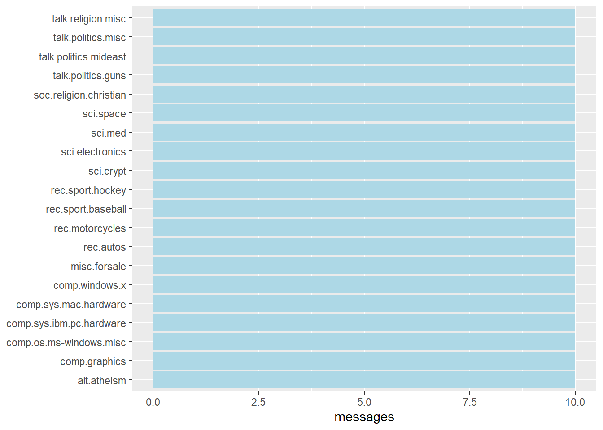
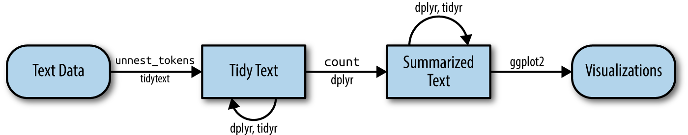
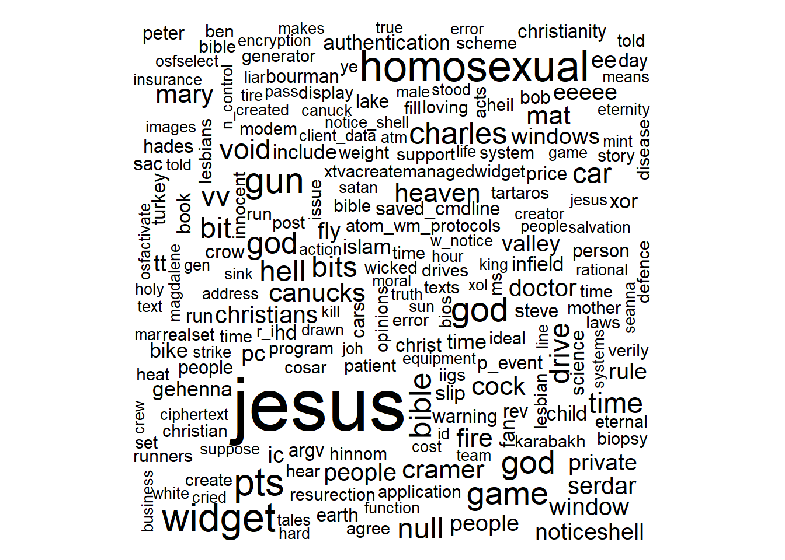

pacman::p_load(tidytext, widyr, wordcloud, DT, ggwordcloud, textplot, lubridate, hms,
tidyverse, tidygraph, ggraph, igraph)Hands-on Exercise 5
29 Visualising and Analysing Text Data with R: tidytext methods
29.1 Learning Outcome
In this hands-on exercise, you will learn how to visualise and analyse text data using R.
By the end of this hands-on exercise, you will be able to:
understand tidytext framework for processing, analysing and visualising text data,
write function for importing multiple files into R,
combine multiple files into a single data frame,
clean and wrangle text data by using tidyverse approach,
visualise words with Word Cloud,
compute term frequency–inverse document frequency (TF-IDF) using tidytext method, and
visualising texts and terms relationship.
29.2 Getting Started
29.2.1 Installing and launching R packages
In this hands-on exercise, the following R packages for handling, processing, wrangling, analysing and visualising text data will be used:
tidytext, tidyverse (mainly readr, purrr, stringr, ggplot2)
widyr,
wordcloud and ggwordcloud,
textplot (required igraph, tidygraph and ggraph, )
DT,
lubridate and hms.
The code chunk:
29.3 Importing Multiple Text Files from Multiple Folders
29.3.1 Creating a folder list
news20 <- "data/20news/"29.3.2 Define a function to read all files from a folder into a data frame
read_folder <- function(infolder) {
tibble(file = dir(infolder,
full.names = TRUE)) %>%
mutate(text = map(file,
read_lines)) %>%
transmute(id = basename(file),
text) %>%
unnest(text)
}29.4 Importing Multiple Text Files from Multiple Folders
29.4.1 Reading in all the messages from the 20news folder
raw_text <- tibble(folder =
dir(news20,
full.names = TRUE)) %>%
mutate(folder_out = map(folder,
read_folder)) %>%
unnest(cols = c(folder_out)) %>%
transmute(newsgroup = basename(folder),
id, text)
write_rds(raw_text, "data/rds/news20.rds")29.5 Initial EDA
Figure below shows the frequency of messages by newsgroup.
The code chunk:
raw_text <- read_rds("data/rds/news20.rds")
raw_text %>%
group_by(newsgroup) %>%
summarize(messages = n_distinct(id)) %>%
ggplot(aes(messages, newsgroup)) +
geom_col(fill = "lightblue") +
labs(y = NULL)
29.6 Introducing tidytext
Using tidy data principles in processing, analysing and visualising text data.
Much of the infrastructure needed for text mining with tidy data frames already exists in packages like ‘dplyr’, ‘broom’, ‘tidyr’, and ‘ggplot2’.
Figure below shows the workflow using tidytext approach for processing and visualising text data.

29.6.1 Removing header and automated email signitures
Notice that each message has some structure and extra text that we don’t want to include in our analysis. For example, every message has a header, containing field such as “from:” or “in_reply_to:” that describe the message. Some also have automated email signatures, which occur after a line like “–”.
cleaned_text <- raw_text %>%
group_by(newsgroup, id) %>%
filter(cumsum(text == "") > 0,
cumsum(str_detect(
text, "^--")) == 0) %>%
ungroup()
Things to learn from the code chunk:
cumsum()of base R is used to return a vector whose elements are the cumulative sums of the elements of the argument.str_detect()from stringr is used to detect the presence or absence of a pattern in a string.
29.6.2 Removing lines with nested text representing quotes from other users.
In this code chunk below, regular expressions are used to remove with nested text representing quotes from other users.
cleaned_text <- cleaned_text %>%
filter(str_detect(text, "^[^>]+[A-Za-z\\d]")
| text == "",
!str_detect(text,
"writes(:|\\.\\.\\.)$"),
!str_detect(text,
"^In article <")
)
Things to learn from the code chunk:
str_detect()from stringr is used to detect the presence or absence of a pattern in a string.filter()of dplyr package is used to subset a data frame, retaining all rows that satisfy the specified conditions.
29.6.3 Text Data Processing
In this code chunk below, unnest_tokens() of tidytext package is used to split the dataset into tokens, while stop_words() is used to remove stop-words.
usenet_words <- cleaned_text %>%
unnest_tokens(word, text) %>%
filter(str_detect(word, "[a-z']$"),
!word %in% stop_words$word)Now that we’ve removed the headers, signatures, and formatting, we can start exploring common words. For starters, we could find the most common words in the entire dataset, or within particular newsgroups.
usenet_words %>%
count(word, sort = TRUE)# A tibble: 5,542 × 2
word n
<chr> <int>
1 people 57
2 time 50
3 jesus 47
4 god 44
5 message 40
6 br 27
7 bible 23
8 drive 23
9 homosexual 23
10 read 22
# ℹ 5,532 more rowsInstead of counting individual word, you can also count words within by newsgroup by using the code chunk below.
words_by_newsgroup <- usenet_words %>%
count(newsgroup, word, sort = TRUE) %>%
ungroup()29.6.4 Visualising Words in newsgroups
In this code chunk below, wordcloud() of wordcloud package is used to plot a static wordcloud.
wordcloud(words_by_newsgroup$word,
words_by_newsgroup$n,
max.words = 300)